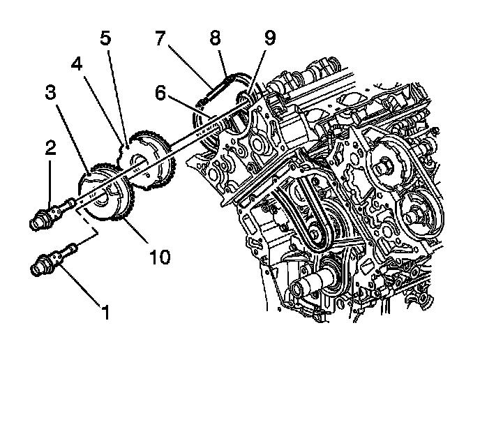
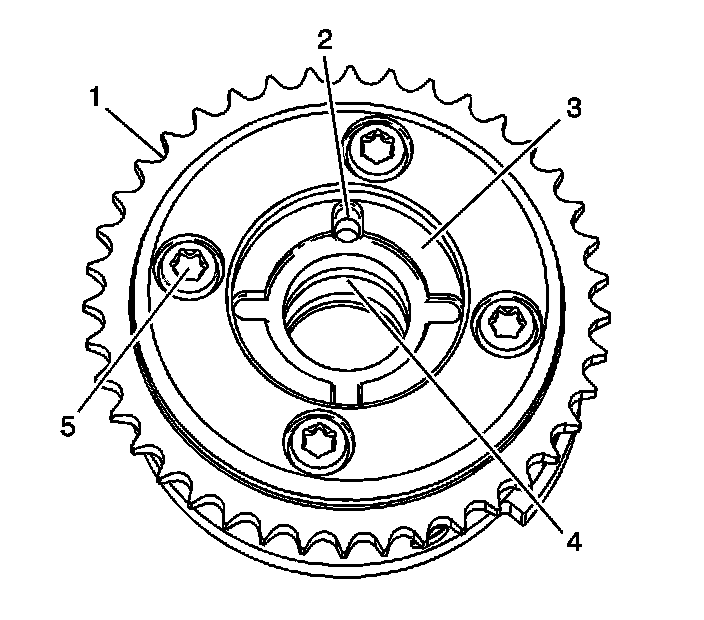
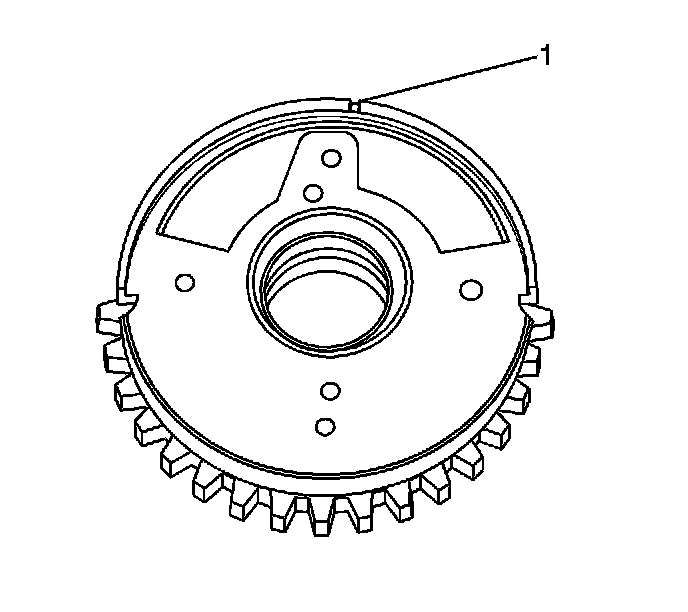

Camshaft Position Actuator Replacement - Bank 1 (Right Side) Exhaust
Camshaft Position Actuator Replacement - Bank 1 (Right Side) Exhaust
Removal Procedure

1. Remove the right exhaust camshaft position actuator oil control valve (1). Refer toCamshaft Position Actuator Oil Control Valve Replacement - Bank 1 (Right Side) Exhaust (Camshaft Position Actuator Oil Control Valve Replacement - Bank 1 (Right Side) Exhaust) .
2. Pull the actuator forward to disengage the actuator from the camshaft alignment pin.
3. Disengage the secondary timing chain from the actuator and remove the actuator.
4. Clean and inspect the camshaft timing drive components. Refer to Camshaft Timing Drive Components Cleaning and Inspection. Overhaul
Installation Procedure

1. Locate the camshaft alignment pin hole (2) on the back of the actuator. This hole will mate with the camshaft alignment pin.

2. Locate the timing alignment mark (1) on the front of the actuator.
3. Engage the actuator timing gear teeth with the secondary timing chain ensuring that the actuator alignment mark (3) corresponds with the paint mark created on the chain link.
4. Slide the actuator over the camshaft alignment pin and install the actuator onto the camshaft.
5. Install the right exhaust camshaft position actuator oil control valve. Refer toCamshaft Position Actuator Oil Control Valve Replacement - Bank 1 (Right Side) Exhaust (Camshaft Position Actuator Oil Control Valve Replacement - Bank 1 (Right Side) Exhaust) .